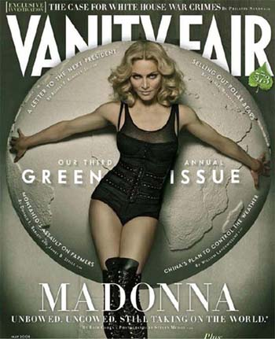

Jahte, Madona, Budva
 Ok, dakle, Madona (Madonna) će 25. septembra pevati na Jazu u Budvi. Dalekovidi organizatori znaju gde žive i rade i koga očekuju, pa je pušteno u prodaju pet hiljada VIP karata. Pre nekoliko dana objavljeno je da je deset hiljada karata već prodato. Ne bi me čudilo, štaviše, očekivala bih, da su rasprodata i sva VIP mesta. Posebno kad se uzme u obzir pažnja koju organizatori pokazuju prema onima koji mogu najviše da plate: "Onima koji žele da sa pučine uživaju u koncertu biće omogućeno da usidre svoje jahte", rekao je Maksa Ćatović pre neki dan na konferenciji za štampu.
I pojasnio:
Napravićemo prolaz od mora do bekstejdža za one koji će doći jahtama. Njih ćemo čamcima prebaciti do obale i ući će direktno u taj deo namenjen Madoni. (Alo).
Sad, koji je to deo namenjen Madoni, ne shvatam...
Budva je već neko vreme strateški usmerena na posetioce koji dolaze jahtama. Ove godine situacija je takva, pišu novine, da su 'Plaže prazne, marine pune'.
Mali problem za sada predstavlja Madonin smeštaj, odnosno njegova cena. Organizatori joj nisu dali popust, kako je to slučaj u Veneciji, gde nastupa pre Budve. Jer, ipak je to Splendid.
Ovo baš postaje zabavno, zar ne?
BTW, ko planira da ide?
UPDATE 2: Madona u Budvi: Teško je biti novinar
 RSS feed
RSS feed
 sadržaji se objavljuju pod
sadržaji se objavljuju pod
Komentari
Ja znam da idem. Samo to. Kako i sve ostalo će se resiti
Tanja | 24.07.08 10:37
"Za koncert koji će Madona 25. septembra održati na plaži Jaz već je prodato oko 20.000 ulaznica iako marketinška kampanja u Srbiji, Crnoj Gori i zemljama regiona tek počinje ove nedelje." (Blic)
Media Mix | 29.07.08 11:00
Evo nešto na temu jahti u CG: http://portomontenegro.com/
kiko | 01.08.08 09:39